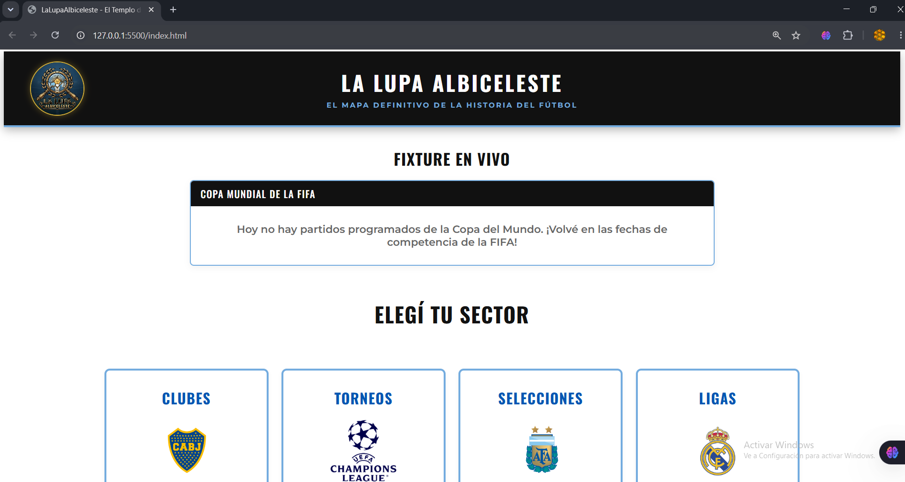

Mis Proyectos
En esta sección vas a encontrar los trabajos prácticos y proyectos personales que vengo desarrollando a lo largo de mi formación como estudiante de desarrollo web.
En esta sección vas a encontrar los trabajos prácticos y proyectos personales que vengo desarrollando a lo largo de mi formación como estudiante de desarrollo web.
Este mismo sitio web representa mi primer gran hito técnico. Fue desarrollado aplicando una arquitectura limpia de carpetas y siguiendo los estándares más modernos de la industria.

Un espacio dedicado al control de versiones donde gestiono ramas, commits y subidas de código, clave para trabajar de forma profesional o en equipo.